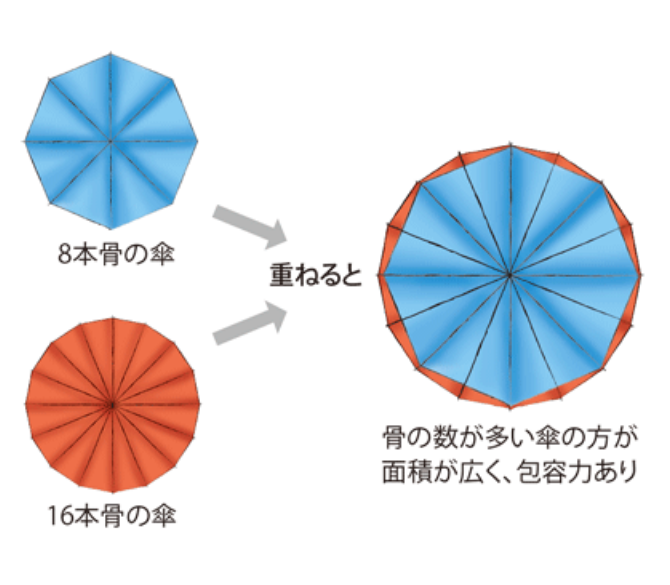
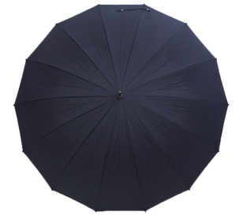
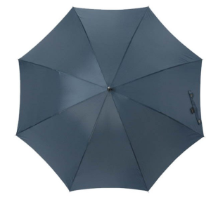
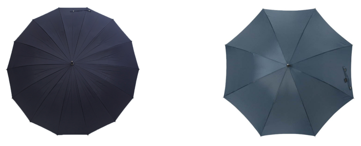
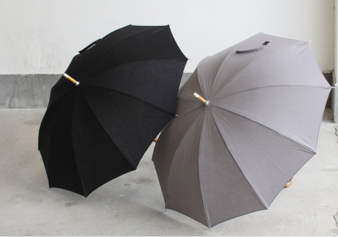
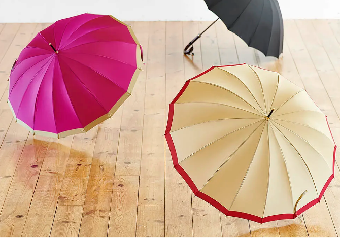
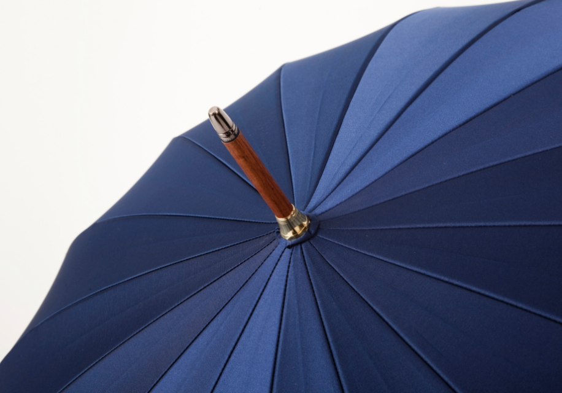
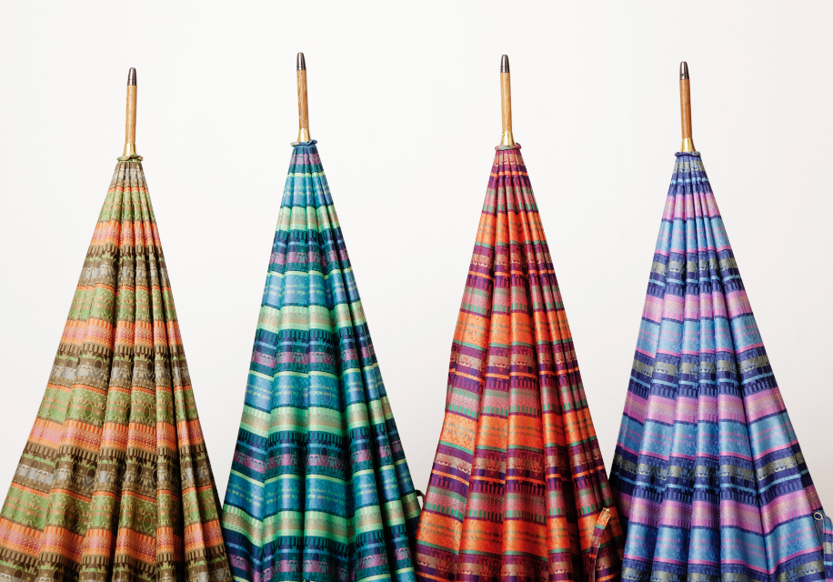

傘の贈り物
傘=消耗品というイメージの多い中、前原の傘は 使うほどに味わいを増し、経年変化を楽しむことのできるアイテムです。
普段鞄や靴、小物類などにこだわりを持ってお使いの方へ、傘の贈り物はいかがでしょうか。
傘の選び方ガイド
-
POINT1 骨の本数で選ぶ
傘の面積は「骨の長さ×本数」で決まります。
紳士用雨傘では、60cmの骨をメインで取り扱っていますが、一般的に60cmと聞くと「すこし小さいかも...」と心配になる方もいらっしゃるかと思います。
しかし、傘の面積は「骨の長さ×本数」で決まる ということがポイント。
60cm×16本の傘の面積は、65cm×8本の傘の面積とほぼ同じです。
つまり骨が多いことで長さを抑えて面積を広くすることができるという利点があるのです。骨ばかり長くて大きい傘は、広げてさすと少しバ ランスが悪く不格好になりがち。

身長の高い方やお荷物が多い方などには65cm×16本の傘をおすすめしますが、特にそうでない限りは60cm×16本、または65cm×8本の傘でも十分雨風はしのいでくれますのでご安心ください。 -
POINT2 傘のシルエットで選ぶ
骨の数で、与える印象もかわります。
骨の本数が多いことで傘を開くと円形に近くなり、華やかで安定感のあるシルエットになります。
逆に骨が少ないとスッキリとした8角形になり、傘を閉じると細巻きになるのでスタイリッシュで華奢なシルエットになります。お好みに応じてお選びください。
  -
POINT3 傘の色で選ぶ
雨空の下で使用することをイメージしましょう。
何色の傘を贈るかお悩みの方へ、大きく分けて2パターンで考えてみてはいかがでしょうか。
1. いつでも使いやすいブラックやネイビーなど落ち着いた色で選ぶ。
2. ご本人は選ばないかも知れないけど、とても似合うと思うおもいきった色で選ぶ。  もちろん落ち着いた色の傘は場所や服装を選ばずとても使いやすいアイテムです。
ただ「少し派手すぎるかな?」と思うような色でも、実際に使用するのは雨空の下なので、ワントーン落ち着いた印象になります。
少しでも気分を盛り上げてくれるようなお色の傘を贈るのも、とってもおすすめです。